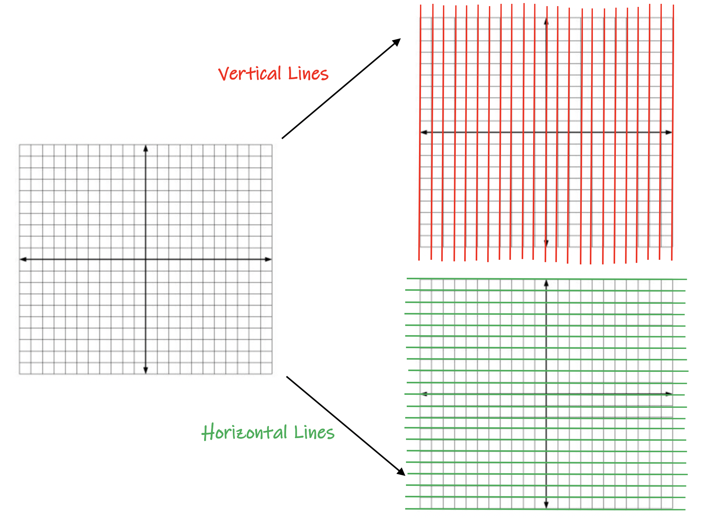
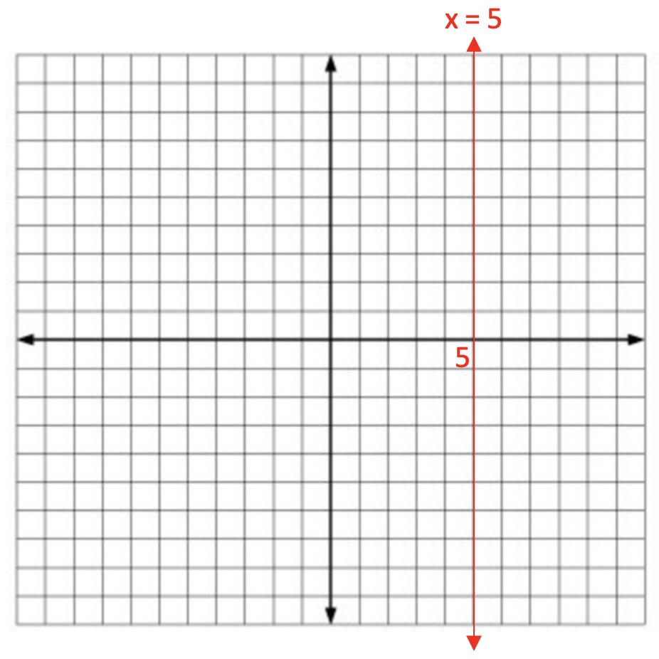
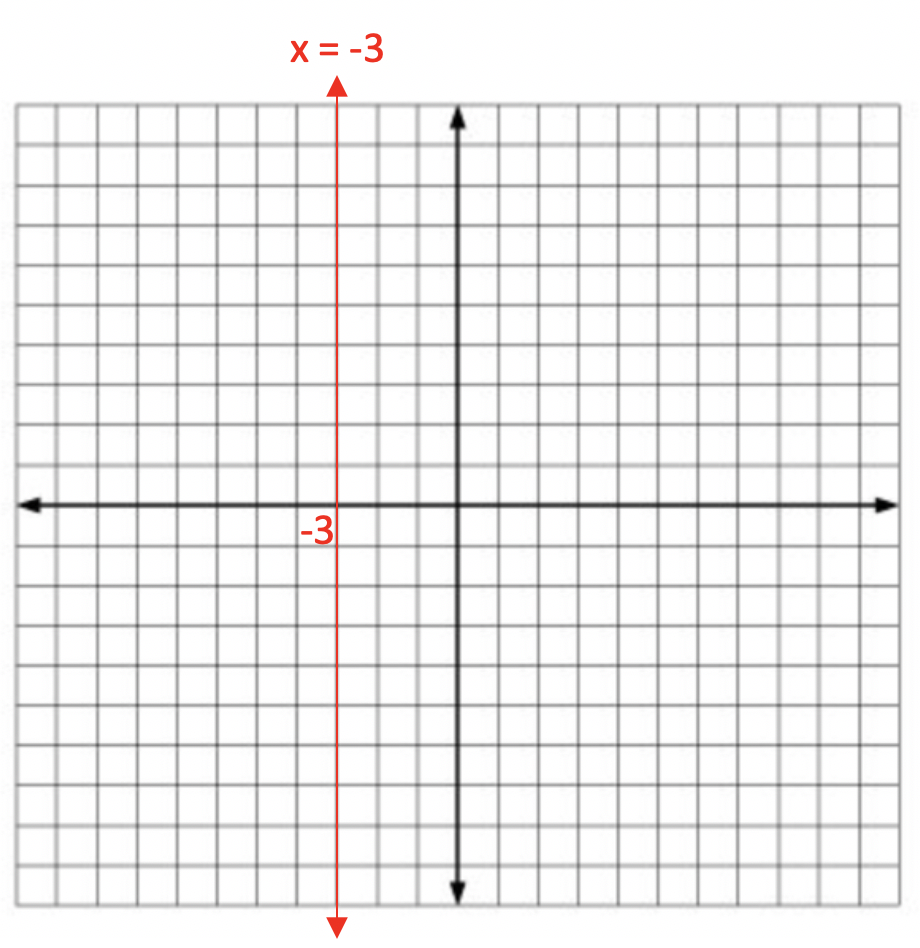
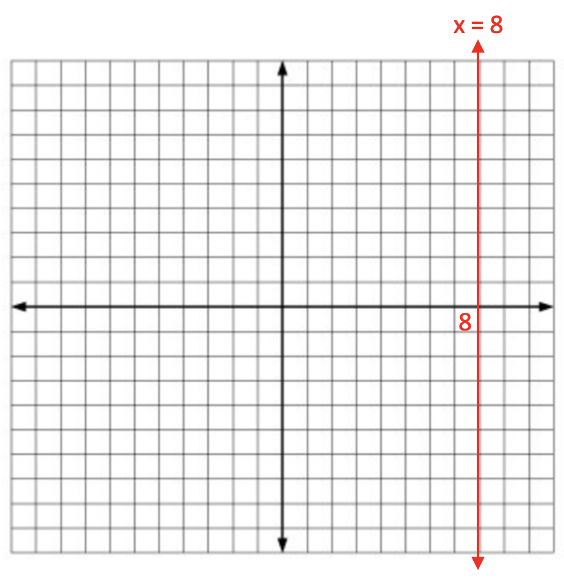
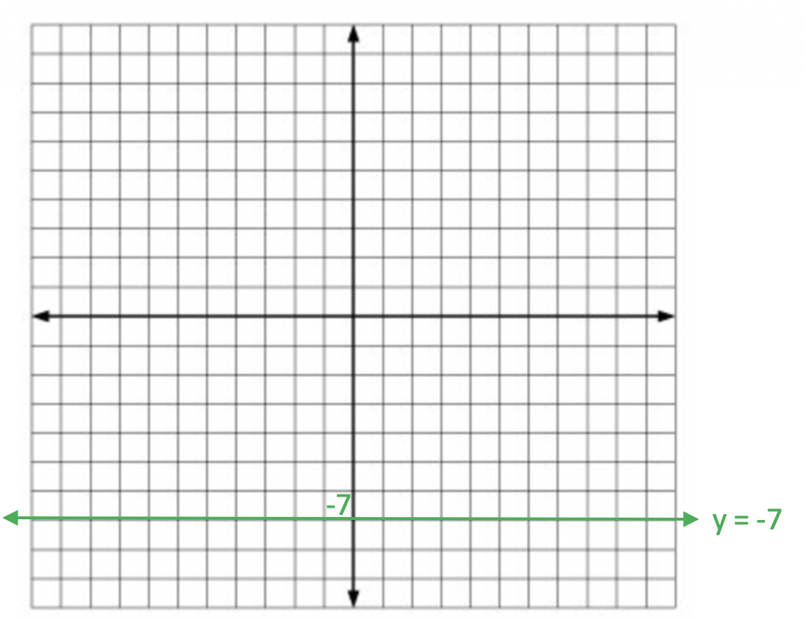
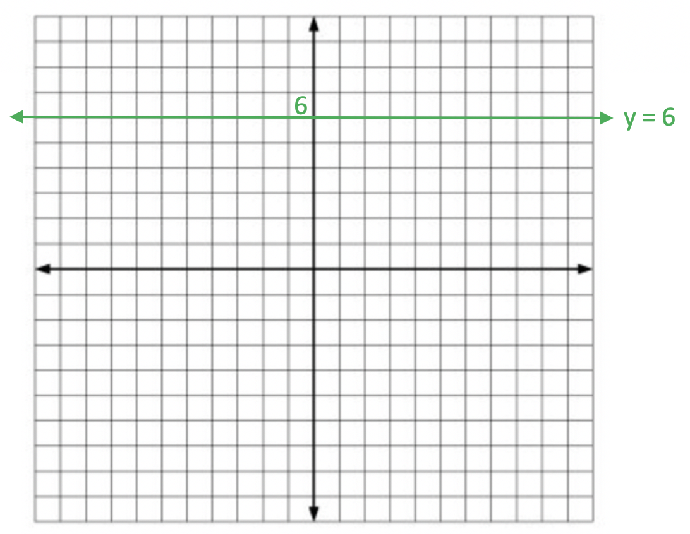

This unit will teach you how to graph horizontal and vertical lines.
A horizontal line points left-to-right. A vertical line points top-to-bottom.
On the coordinate plane, the x-axis is an example of a horizontal line.
The y-axis is considered a vertical line.
When you are graphing the equation y = mx + b, the lines are always sloped positive or negative, but never horizontal or vertical. Therefore special equations are given to horizontal and vertical lines.
Let's examine vertical and horizontal lines on the coordinate plane first.

The top picture highlights in red each of the vertical lines on the coordinate plane. Each line crosses the x-axis at a specific value. Therefore, their equation is x = a number. The number is the location on the x-axis in which the line crosses the axis.
The bottom picture highlights in green each of the horizontal lines on the coordinate plane. Each line crosses the y-axis at a specific value. Therefore, their equation is y = a number. The number is the location on the y-axis in which the line crosses the axis.
Example 1: Graph x = 5.

Example 2: Graph x = -3.

Example 3: Graph x = 8.

Let's look at a few examples of graphing horizontal lines:
Example 2: Graph y = -7.

Example 3: Graph y = 6.
